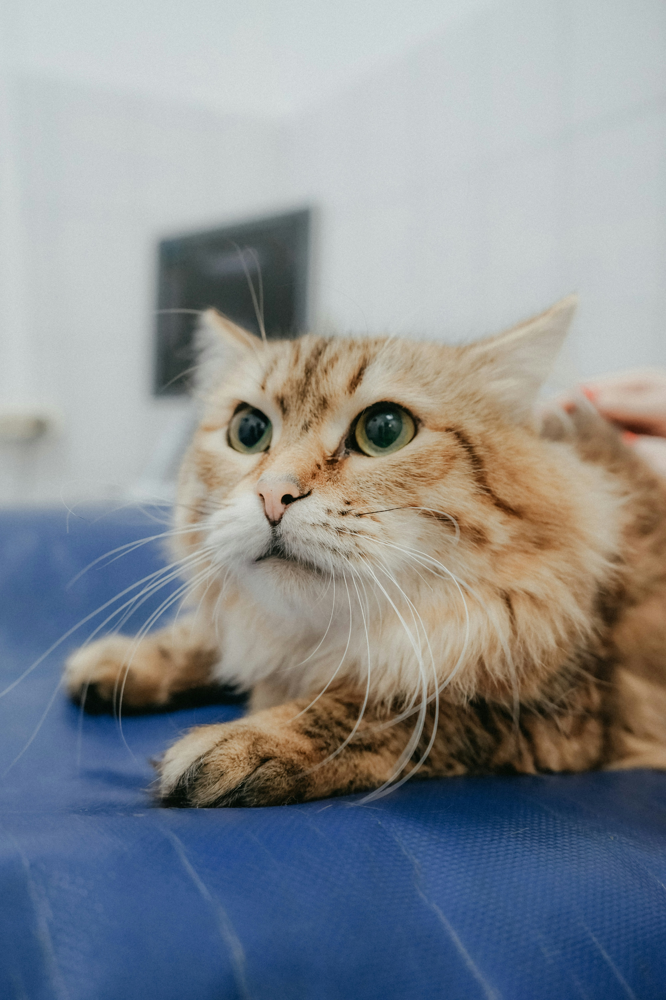
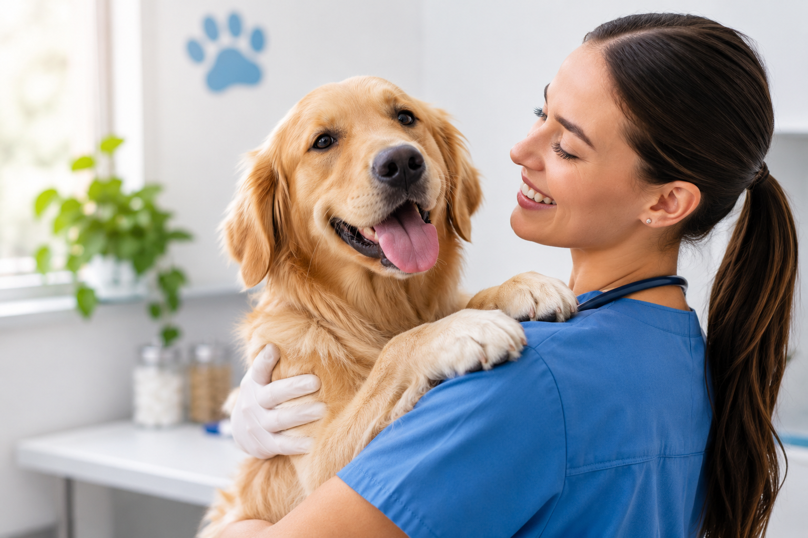
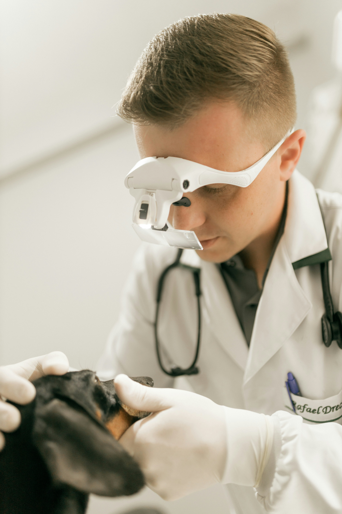
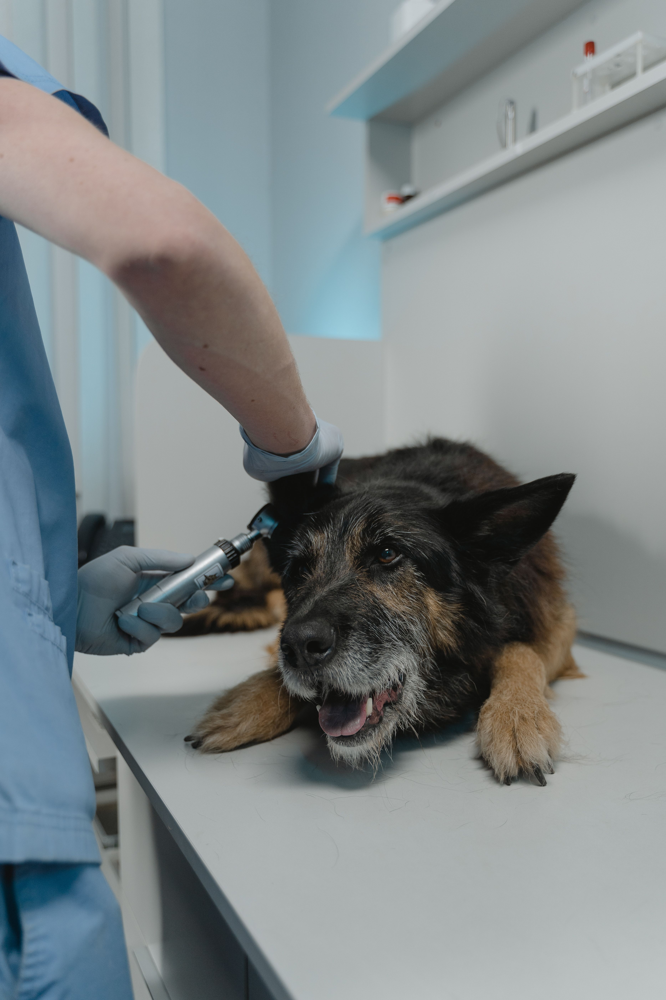

Consulta general
Evaluamos el estado de salud de tu mascota mediante revisiones médicas y orientación para su cuidado y bienestar.
Somos una clínica veterinaria dedicada al cuidado integral de perros y gatos. Ofrecemos servicios de prevención, diagnóstico y tratamiento, enfocados en proteger la salud y mejorar la calidad de vida de nuestros pacientes.
Nuestro compromiso es brindar una atención profesional, cercana y responsable, acompañando a cada propietario en el cuidado y bienestar de su mascota.

En Huellitas Vet ofrecemos servicios veterinarios enfocados en la prevención, diagnóstico y tratamiento de enfermedades en perros y gatos.

Evaluamos el estado de salud de tu mascota mediante revisiones médicas y orientación para su cuidado y bienestar.

Brindamos atención veterinaria ante situaciones que requieren una evaluación y tratamiento médico inmediato.

Ayudamos a prevenir enfermedades mediante programas de vacunación y desparasitación adecuados para perros y gatos.
En Huellitas Vet trabajamos para ofrecer una atención de calidad, cercana y responsable, porque sabemos lo importantes que son las mascotas para sus familias.
Brindamos atención veterinaria responsable, enfocada en la salud y el bienestar de perros y gatos.
Contamos con servicios de prevención, diagnóstico y tratamiento para atender las necesidades de cada mascota.
Ofrecemos un trato respetuoso y acompañamiento a los propietarios durante el cuidado de sus mascotas.